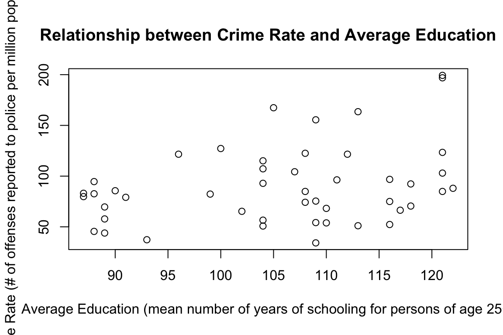
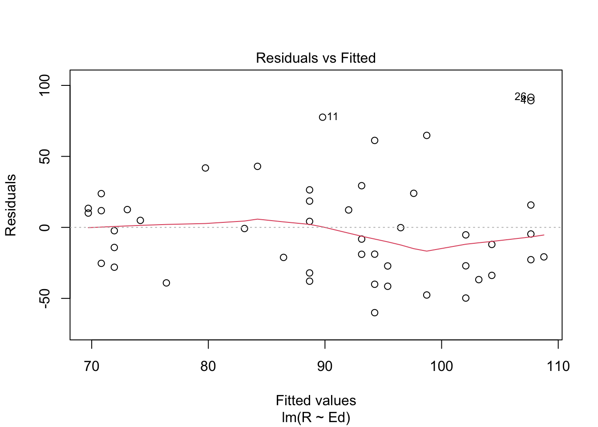
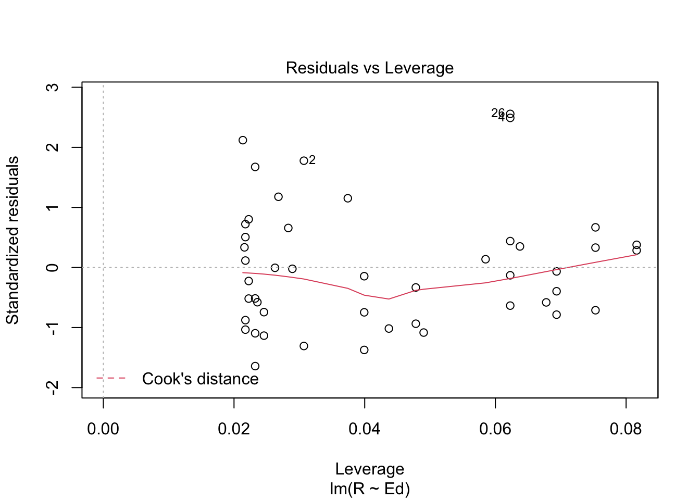

Assignment 3
Marcus Ramirez
Today’s date here: 10/21/2021
knitr::opts_chunk$set(echo = TRUE)Collaborators: .
This assignment is due on Canvas on Wednesday 10/27/2021 before class, at 10:15 am. Include the name of anyone with whom you collaborated at the top of the assignment.
Submit your responses as either an HTML file or a PDF file on Canvas. Also, please upload it to your website.
Save the file (found on Canvas) crime_simple.txt to the same folder as this file (your Rmd file for Assignment 3).
Load the data.
library(readr)
library(knitr)
dat.crime <- read_delim("crime_simple.txt", delim = "\t")## Rows: 47 Columns: 14## ── Column specification ────────────────────────────────────────────────────────
## Delimiter: "\t"
## dbl (14): R, Age, S, Ed, Ex0, Ex1, LF, M, N, NW, U1, U2, W, X##
## ℹ Use `spec()` to retrieve the full column specification for this data.
## ℹ Specify the column types or set `show_col_types = FALSE` to quiet this message.dat4 <- read_delim("crime_simple.txt")## Rows: 47 Columns: 14## ── Column specification ────────────────────────────────────────────────────────
## Delimiter: "\t"
## dbl (14): R, Age, S, Ed, Ex0, Ex1, LF, M, N, NW, U1, U2, W, X##
## ℹ Use `spec()` to retrieve the full column specification for this data.
## ℹ Specify the column types or set `show_col_types = FALSE` to quiet this message.This is a dataset from a textbook by Brian S. Everitt about crime in the US in 1960. The data originate from the Uniform Crime Report of the FBI and other government sources. The data for 47 states of the USA are given.
Here is the codebook:
R: Crime rate: # of offenses reported to police per million population
Age: The number of males of age 14-24 per 1000 population
S: Indicator variable for Southern states (0 = No, 1 = Yes)
Ed: Mean of years of schooling x 10 for persons of age 25 or older
Ex0: 1960 per capita expenditure on police by state and local government
Ex1: 1959 per capita expenditure on police by state and local government
LF: Labor force participation rate per 1000 civilian urban males age 14-24
M: The number of males per 1000 females
N: State population size in hundred thousands
NW: The number of non-whites per 1000 population
U1: Unemployment rate of urban males per 1000 of age 14-24
U2: Unemployment rate of urban males per 1000 of age 35-39
W: Median value of transferable goods and assets or family income in tens of $
X: The number of families per 1000 earning below 1/2 the median income
We are interested in checking whether the reported crime rate (# of offenses reported to police per million population) and the average education (mean number of years of schooling for persons of age 25 or older) are related.
- How many observations are there in the dataset? To what does each observation correspond?
dim(dat4)## [1] 47 14There are 47 observations in the dataset. Each observation corresponds to a particular state in the US (in 1960).
- Draw a scatterplot of the two variables. Calculate the correlation between the two variables. Can you come up with an explanation for this relationship?
plot(dat4$Ed, dat4$R, main="Relationship between Crime Rate and Average Education",
xlab="Average Education (mean number of years of schooling for persons of age 25+)", ylab="Crime Rate (# of offenses reported to police per million population)")
cor(dat4$Ed, dat4$R)## [1] 0.3228349The correlation is 0.3228349. From this, I can conclude that there is a weak positive correlation between crime rate and average education.
- Regress reported crime rate (y) on average education (x) and call this linear model
crime.lmand write the summary of the regression by using this code, which makes it look a little nicer{r, eval=FALSE} kable(summary(crime.lm)$coef, digits = 2).
# Remember to remove eval=FALSE above!
crime.lm <- lm(formula = R ~ Ed, data = dat4)
summary(crime.lm)##
## Call:
## lm(formula = R ~ Ed, data = dat4)
##
## Residuals:
## Min 1Q Median 3Q Max
## -60.061 -27.125 -4.654 17.133 91.646
##
## Coefficients:
## Estimate Std. Error t value Pr(>|t|)
## (Intercept) -27.3967 51.8104 -0.529 0.5996
## Ed 1.1161 0.4878 2.288 0.0269 *
## ---
## Signif. codes: 0 '***' 0.001 '**' 0.01 '*' 0.05 '.' 0.1 ' ' 1
##
## Residual standard error: 37.01 on 45 degrees of freedom
## Multiple R-squared: 0.1042, Adjusted R-squared: 0.08432
## F-statistic: 5.236 on 1 and 45 DF, p-value: 0.02688- Are the four assumptions of linear regression satisfied? To answer this, draw the relevant plots. (Write a maximum of one sentence per assumption.)
plot(dat4$Ed, crime.lm$residuals, ylim=c(-15,15), main="Residuals vs. x", xlab="x, Average Education", ylab="Residuals")
abline(h = 0, lty="dashed")
plot(crime.lm, which=1)
plot(crime.lm, which=3)
plot(crime.lm, which=5)
plot(crime.lm, which=2)
The linearity assumption is satisfied because when I plot the residuals against x or against the predicted values there is no pattern; the red line on the Residuals vs. Fitted plot is relatively flat. The indepdence assumption is satisfied because when we plot the residuals against x there isn’t any evidence of pattterns or clumping of data (exhibiting independence). The equal variance (homoscedasticity) assumption is satisified because when looking at the scale-location plot, I see a relatively flat line which indicate that the ereors have constant variance (no significant trends in red line). The normal population assumption is satisfied because the residuals are roughly normally distributed despite the right tail of the qq plot being “light” (smaller than usual for the normal distribution).
- Is the relationship between reported crime and average education statistically significant? Report the estimated coefficient of the slope, the standard error, and the p-value. What does it mean for the relationship to be statistically significant?
The estimated coefficient of slope is 1.1161, the standard error is 0.4878, the p-value is 0.0269. The relationship between reprorted crime and average education is statistically significant because the estimated p-value (0.0269) is less than the chosen significance level of 0.5 For the relationship to be statistically significant means that the relationship between the variables is unlikely to have occurred unless there was really a relationship between them. We can reject the null hypothesis that no statiscal relationship exists.
- How are reported crime and average education related? In other words, for every unit increase in average education, how does reported crime rate change (per million) per state?
For every unit increase in average education, reported crime rate change (per million) per state increases by 1.1161. We know this because the estimated slope of the scatterplot between the two variables was 1.1161.
- Can you conclude that if individuals were to receive more education, then crime will be reported more often? Why or why not?
No, we cannot conclude that if individuals were to receive more education, crime will be reported more often. This is because correlation doesn’t necessarily indicate causation. Correlation can help us understand how variables are associated and the strength of their relationship such that we can draw useful predictions (about larger populations). In this case it would be less practical to say “if you increase education by one unit, reported crime will increase by 1.1161,” rather one should say "for a higher education, by one unit, reported crime rate was higher by 1.1161, on average).